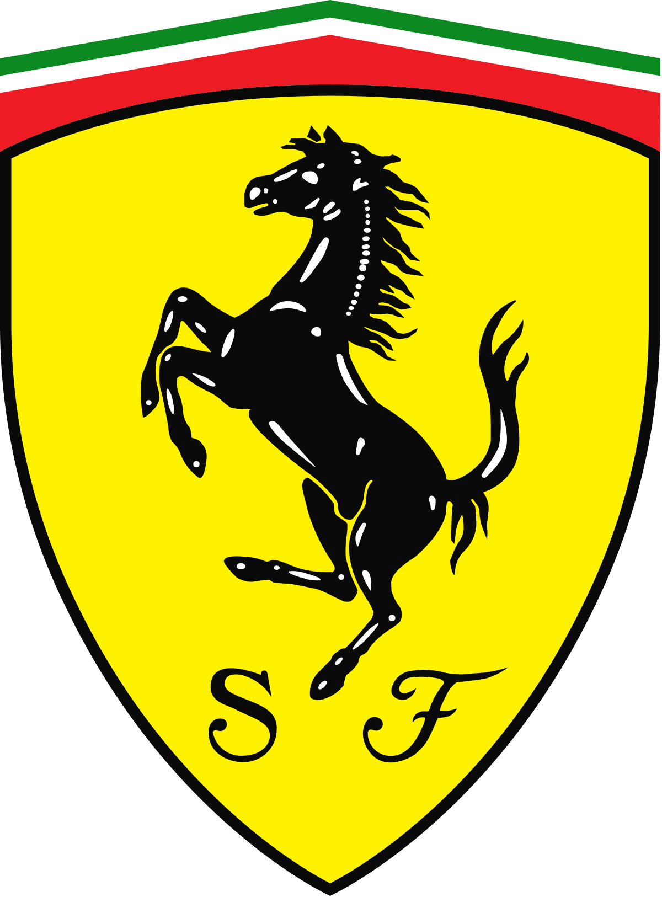

HTML
Linklerle Çalışmak
Ferrari Web Sitesi için Logoya Tıklayın

Görsellerle Çalışmak
Furkan ÖZNAM
Hakkımda
Yaptığım ve hoşlandığım şeyler.


- Sevdiğim Filmler
- Sevdiğim Diziler
- Sevdiğim Kitaplar
-
Aeden
- Lontario
- Fahrenheit
- Sırasız-1
- Sırasız-2
- Sırasız-3